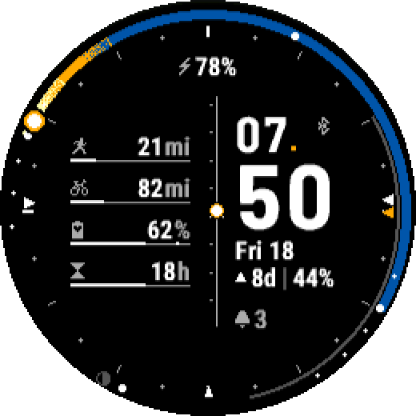
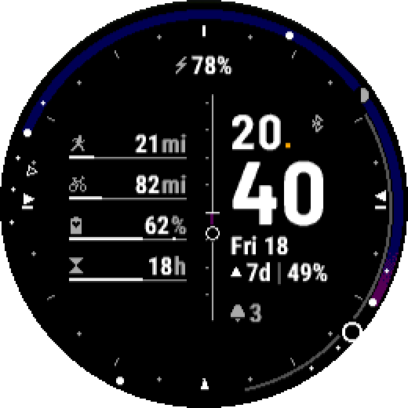
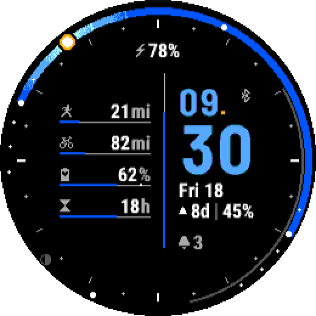

24h Astro
Your day's sky, at a glance.
The ring covers the full 24 hours: midnight at the bottom, noon at the top. The sky is drawn live along it, computed for your location. The sun is where it really is, and so is the moon.

The sky
- Sunrise, sunset, solar noon and midnight, the three twilights: marked on the ring.
- A compass on the hour marks: where the sun rises, where it sets, where it is now (or the moon).
- Polar day and polar night included.
The Moon
- Its arc from rise to set, its disc at the right phase.
- The countdown to the next full or new moon, and how much of it is lit.
Your data
- Up to 4 gauges, as bars or rings: sport, Body Battery, recovery, steps, floors, intensity minutes, heart rate, stress.
- 4 fields of your choice: date, moon, next sunrise or sunset, day length, battery, notifications and your daily data.
Your way
- 3 colour themes, 6 layouts, a central bar of your choice.
- Automatic location or entered by hand.
- English and French, km or miles as set on the watch.



Learn more
- Reading the face: the ring, the moon, the compass, the short notations.
- Settings
- Compatible watches
- FAQ
- What's new
- Watch data: gauges and fields, shared by all watch faces.